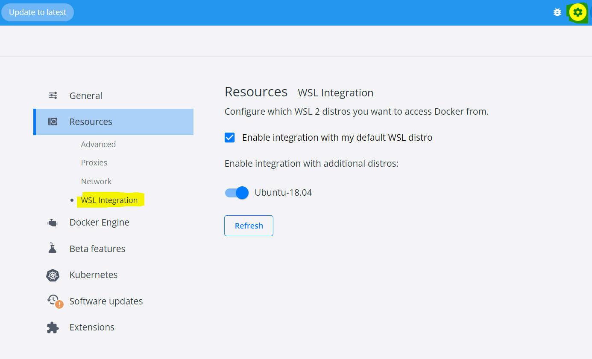
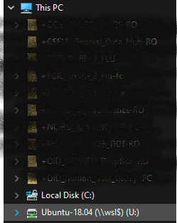

vignettes/troubleshooting.Rmd
troubleshooting.RmdTroubleshooting
MIRA installation failed
MIRA installation with docker compose expects an Ubuntu 18+ operating system or WSL2 distribution. If you have this, perform the following:
Restart your computer
-
Add google’s domain name server (DNS) to /etc/resolv.confirm
sudo echo 8.8.8.8 >> /etc/resolv.conf Open Docker Desktop and select all containers and Delete them.


Go to Installing MIRA
My containers are running in Ubuntu, but I don’t see them in Docker Desktop
Following successful installation, you should see your containers running in Ubuntu and in Docker Desktop. However, if you have multiple Ubuntu distributions installed, you may need to enable the right one in Docker Desktop.
Click the “Settings” icon in the top right corner of Docker Desktop, then Resources, then WSL Integration. Here, you can enable the right distribution if you see multiple Ubuntu versions listed:

Then click Apply and Restart
WSL install error
From the Windows search bar, open
Turn Windows Features on or off and make sure the following
4 features are enabled:
- Hyper-V
- Virtual Machine Platform
- Windows Hypervisor Platform
- Windows Subsystem for Linux
apt-get update error
If your apt-get update fails with a message related to
certificates not valid for another 3 hours (for example), this means
your computer time zone does not match Ubuntu time zone. Change your
Windows time to auto-update and match the current timezone, then try
again.
Map network drive
**Many computers have trouble with this step; the folders are not
selectable during this step. First, make sure that an Ubuntu terminal is
opened and then open the File Explorer. If “Ubuntu” is
still not showing up in File Explorer, you can try to find
the solution here: https://github.com/microsoft/WSL/issues/3996.
-
Open File Explorer
- If you have a Windows 10 or 11 OS, WSL is likely automatically mapped and visible in the left hand sidebar as “Ubuntu”
Right click This PC and click Map network drive
Enter
\\wsl$into Folder: and click Browse-
Click on
wsl$to unfold directories, selectUbuntu-18.04and click OK and thenFinish. You should now see your WSL “drive” available inFile Explorer:
Docker CLI errors
- If you get an error related to starting Docker, run the following command, then try to run hello-world again
sudo service docker start- If you get an error related to “Permission Denied” of docker.sock, run the following command, then try to run hello-world again
sudo chmod -755 /run/docker.sock- If your hello-world container still is not showing, open the Ubuntu-22.04 command prompt and run:
docker run -d -p 80:80 docker/getting-started